Particle System Modules (Shuriken)
The Particle System (Shuriken) uses modules to describe the behaviour of particles over time. The modules are documented in detail here. For an introduction to modules see this page.
Initial Module
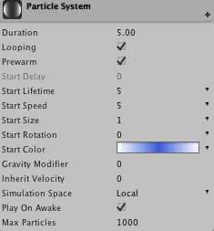 This module is always present, it cannot be removed or disabled.
| Property: | Function: |
|---|---|
| Duration | The duration the Particle System will be emitting particles. |
| Looping | Is the Particle System looping. |
| Prewarm | Only looping systems can be prewarmed which means that the Particle System will have emitted particles at start as if it had already emitted particles one cycle. |
| Start Delay | Delay in seconds that this Particle System will wait before emitting particles. Note prewarmed looping systems cannot use a start delay. |
| Start Lifetime | The lifetime of particles in seconds (see MinMaxCurve). |
| Start Speed | The speed of particles when emitted (see MinMaxCurve). |
| Start Size | The size of particles when emitted (see MinMaxCurve). |
| Start Rotation | The rotation of particles when emitted (see MinMaxCurve). |
| Randomize Rotation Direction | Configure a percentage of spawned particles to spin in the opposite direction. |
| Start Color | The color of particles when emitted (see MinMaxGradient). |
| Gravity Modifier | The amount of gravity that will affect particles during their lifetime. |
| Inherit Velocity | Factor for controlling the amount of velocity the particles should inherit of the transform of the Particle System (for moving Particle Systems). |
| Simulation Space | Simulate the Particle System in local space or world space. |
| Play On Awake | If enabled the Particle System will automatically start when it's created. |
| Max Particles | Max number of particles the Particle System will emit. |
Emission Module
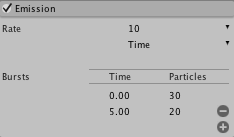 Controls the rate of particles being emitted and allows spawning large groups of particles at certain moments (over Particle System duration time). Useful for explosions when a bunch of particles need to be created at once.
| Property: | Function: |
|---|---|
| Rate | Amount of particles emitted over Time (per second) or Distance (per meter) (see MinMaxCurve). |
| Bursts (Time option only) | Add bursts of particles that occur within the duration of the Particle System. |
| Time and Number of Particles | Specify time (in seconds within duration) that a specified amount of particles should be emitted. Use the + and - for adjusting number of bursts. |
Shape Module
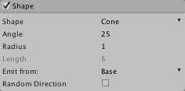 Defines the shape of the emitter: Sphere, Hemisphere, Cone, Box and Mesh. Can apply initial force along the surface normal or random direction.
| Property: | Function: |
|---|---|
| Sphere | |
| Radius | Radius of the sphere. (Can also be manipulated by handles in the Scene View). |
| Emit from Shell | Emit from shell of the sphere. If disabled, particles will be emitted from the volume of the sphere. |
| Random Direction | Should particles have a random direction when emitted or a direction along the surface normal of the sphere? |
| Hemisphere | |
| Radius | Radius of the hemisphere. (Can also be manipulated by handles in the Scene View). |
| Emit from Shell | Emit from shell of the hemisphere. If disabled particles will be emitted from the volume of the hemisphere. |
| Random Direction | Should particles have a random direction when emitted or a direction along the surface normal of the hemisphere? |
| Cone | |
| Angle | Angle of the cone. If angle is 0 then particles will be emitted in one direction. (Can also be manipulated by handles in the Scene View). |
| Radius | The radius at the point of emission. If the value is near zero emission will be from a point. A larger value basically creates a capped cone, emission coming from a disc rather than a point. (Can also be manipulated by handles in the Scene View). |
| Length | Length of the emission volume. Only available when emitting from a Volume or Volume Shell. (Can also be manipulated by handles in the Scene View). |
| Emit From | Determines where emission originates from. Possible values are Base, Base Shell, Volume and Volume Shell. |
| Random Direction | Should particles have a random direction when emitted or a direction along the cone? |
| Box | |
| Box X | Scale of box in X. (Can also be manipulated by handles in the Scene View). |
| Box Y | Scale of box in Y. (Can also be manipulated by handles in the Scene View). |
| Box Z | Scale of box in Z. (Can also be manipulated by handles in the Scene View). |
| Random Direction | Should particles have a random direction when emitted or a direction along the Z-axis of the box? |
| Mesh | |
| Type | Particles can be emitted from either Vertex, Edge or Triangle. |
| Mesh | Select Mesh that should be used as emission shape. |
| Random Direction | Should particles have a random direction when emitted or a direction along the surface of the mesh? |
| Circle | |
| Radius | Radius of the circle. (Can also be manipulated by the square handles in the Scene View). |
| Arc | Angle of the arc. (Can also be manipulated by the circular handle in the Scene View). |
| Emit from Edge | Emit from edge of the circle. If disabled, particles will be emitted from the area of the circle. |
| Random Direction | Should particles have a random direction when emitted or a direction along the surface normal of the circle? |
| Edge | |
| Radius | Half length of the edge. (Can also be manipulated by the square handles in the Scene View). |
| Random Direction | Should particles have a random direction when emitted or go straight up (Y axis)? |
Velocity Over Lifetime Module
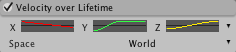 Directly animates velocity of the particle. Mostly useful for particles which has complex physical, but simple visual behavior (like smoke with turbulence and temperature loss) and has little interaction with physical world.
| Property: | Function: |
|---|---|
| XYZ | Use either constant values for curves or random between curves for controlling the movement of the particles. See MinMaxCurve. |
| Space | Local / World: Are the velocity values in local space or world space? |
Limit Velocity Over Lifetime Module
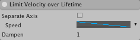 Basically can be used to simulate drag. Dampens or clamps velocity, if it is over certain threshold. Can be configured per axis or per vector length.
| Property: | Function: |
|---|---|
| Separate Axis | Use for setting per axis control. |
| Speed | Specify magnitude as constant or by curve that will limit all axes of velocity. See MinMaxCurve. |
| Dampen | (0-1) value that controls how much the exceeding velocity should be dampened. For example, a value of 0.5 will dampen exceeding velocity by 50%. |
Force Over Lifetime Module
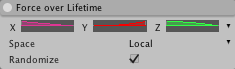
| Property: | Function: |
|---|---|
| XYZ | Use either constant values for curves or random between curves for controlling the force applied to the particles. See MinMaxCurve. |
| Space | Local / World: Are the velocity values in local space or world space |
| Randomize | Randomize the force applied to the particles every frame. |
Color Over Lifetime Module
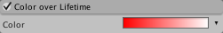
| Property: | Function: |
|---|---|
| Color | Controls the color of each particle during its lifetime. If some particles have a shorter lifetime than others, they will animate faster. Use constant color, random between two colors, animate it using gradient or specify a random color using two gradients (see Gradient). Note that this colour will be multiplied by the value in the Start Color property - if the Start Color is black then Color Over Lifetime will not affect the particle. |
Color By Speed Module
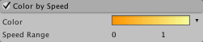 Animates particle color based on its speed. Remaps speed in the defined range to a color.
| Property: | Function: |
|---|---|
| Color | Color used for remapping of speed. Use gradients for varying colors. See MinMaxGradient. |
| Speed Range | The min and max values for defining the speed range which is used for remapping a speed to a color. |
Size Over Lifetime Module
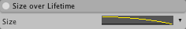
| Property: | Function: |
|---|---|
| Size | Controls the size of each particle during its lifetime. Use constant size, animate it using a curve or specify a random size using two curves. See MinMaxCurve. |
Size By Speed Module
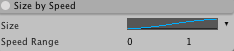
| Property: | Function: |
|---|---|
| Size | Size used for remapping of speed. Use curves for varying sizes. See MinMaxCurve. |
| Speed Range | The min and max values for defining the speed range which is used for remapping a speed to a size. |
Rotation Over Lifetime Module
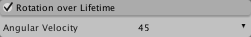 Specify values in degrees.
| Property: | Function: |
|---|---|
| Angular Velocity | Controls the rotational speed of each particle during its lifetime. Use constant rotational speed, animate it using a curve or specify a random rotational speed using two curves. See MinMaxCurve. |
Rotation By Speed Module
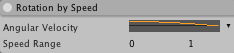
| Property: | Function: |
|---|---|
| Angular Velocity | Rotational speed used for remapping of a particle's speed. Use curves for varying rotational speeds. See MinMaxCurve. |
| Speed Range | The min and max values for defining the speed range which is used for remapping a speed to a rotational speed. |
External Forces Module
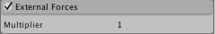
| Property: | Function: |
|---|---|
| Multiplier | Scale factor that determines how much the particles are affected by wind zones (i.e., the wind force vector is multiplied by this value). |
Collision Module
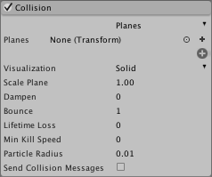 Set up collisions for the particles of this Particle System. World and planar collisions are supported. Planar collision is very efficient for simple collision detection. Planes are set up by referencing an existing transform in the scene or by creating a new empty GameObject for this purpose. Another benefit of planar collision is that particle systems with collision planes can be set up as prefabs. World collision uses raycasts so must be used with care in order to ensure good performance. However, for cases where approximate collisions are acceptable world collision in Low or Medium quality can be very efficient.
Properties common for any Collision Module
| Property: | Function: |
|---|---|
| Planes/World | Specify the collision type: Planes for planar collision or World for world collisions. |
| Dampen | (0-1) When the particle collides, it will keep this fraction of its speed. Unless it is set to 1.0, the particle will become slower after collision. |
| Bounce | (0-1) When the particle collides, it will keep this fraction of the component of the velocity, which is normal to the plane of collision. |
| Lifetime Loss | (0-1) The fraction of Start Lifetime lost on each collision. When lifetime reaches 0, the particle dies. For example if a particle should die on first collision, set this to 1.0. |
| Min Kill Speed | The minimum speed of a particle before it is killed. |
| Send Collision Messages | Whether to send collision messages and thus trigger OnParticleCollision callbacks on GameObjects and ParticleSystems. |
Properties available only in the Planes Mode
| Property: | Function: |
|---|---|
| Planes | Planes are defined by assigning a reference to a transform. This transform can be any transform in the scene and can be animated. Multiple planes can be used. Note: the Y-axis is used as the normal of a plane. |
| Visualization | Only used for visualizing the planes: Grid or Solid. |
| Grid | Rendered as gizmos and is useful for quick indication of position and orientation in the world. |
| Solid | Renders a plane in the scene which is useful for exact positioning of a plane. |
| Scale Plane | Resizes the visualization planes. |
| Particle Radius | The assumed radius of the particle for collision purposes. (So particles are treated as spheres.) |
Properties available only in the World Mode
| Property: | Function: |
|---|---|
| Collides With | Filter for specifying colliders. Select Everything to colllide with the whole world. |
| Collision Quality | The quality of the world collision. |
| High | All particles performs a scene raycast per frame. Note: This is CPU intensive, it should only be used with 1000 simultaneous particles (scene wide) or less. |
| Medium | The particle system receives a share of the globally set Particle Raycast Budget (see Particle Raycast Budget) in each frame. Particles are updated in a round-robin fashion where particles that do not receive a raycast in a given frame will lookup and use older collisions stored in a cache. Note: This collision type is approximate and some particles will leak, particularly at corners. |
| Low | Same as Medium except the particle system is only awarded a share of the Particle Raycast Budget every fourth frame. |
| Voxel Size | Density of the voxels used for caching intersections used in the Medium and Low quality setting. The size of a voxel is given in scene units. Usually, 0.5 - 1.0 should be used (assuming metric units). |
Sub Emitter Module
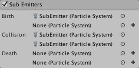 This is a powerful module that enables spawning of other Particle Systems at the follwing particle events: birth, death or collision of a particle.
| Property: | Function: |
|---|---|
| Birth | Spawn another Particle System at birth of each particle in this Particle System. |
| Death | Spawn another Particle System at death of each particle in this Particle System. |
| Collision | Spawn another Particle System at collision of each particle in this Particle System. IMPORTANT: Collision needs to be set up using the Collision Module. See Collision Module. |
Texture Sheet Animation Module
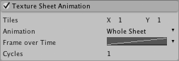 Animates UV coordinates of the particle over its lifetime. Animation frames can be presented in a form of a grid or every row in the sheet can be separate animation. The frames are animated with curves or can be a random frame between two curves. The speed of the animation is defined by "Cycles". IMPORTANT: The texture used for animation is the one used by the material found in the Renderer module.
| Property: | Function: |
|---|---|
| Tiles | Define the tiling of the texture. |
| Animation | Specify the animation type: Whole Sheet or Single Row. |
| Whole Sheet | Uses the whole sheet for uv animation. |
| - Frame over Time | Controls the uv animation frame of each particle during its lifetime over the whole sheet. Use constant, animate it using a curve or specify a random frame using two curves. See MinMaxCurve. |
| Single Row | Uses a single row of the texture sheet for uv animation. |
| - Random Row | If checked, the start row will be random, and if unchecked, the row index can be specified (first row is 0). |
| - Frame over Time | Controls the uv animation frame of each particle during its lifetime within the specified row. Use constant, animate it using a curve or specify a random frame using two curves. See MinMaxCurve. |
| - Cycles | Specify speed of animation. |
Renderer Module
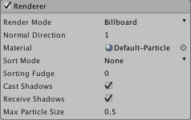 The renderer module exposes the ParticleSystemRenderer component's properties. Note that even though a GameObject has a ParticleSystemRenderer component, its properties are only exposed here. When this module is removed/added, it is actually the ParticleSystemRenderer component that is added or removed.
| Property: | Function: |
|---|---|
| Render Mode | Select one of the following particle render modes. |
| Billboard | Makes the particles always face the camera. |
| Stretched Billboard | Particles are stretched using the following parameters. |
| - Camera Scale | How much the camera speed is factored in when determining particle stretching. |
| - Speed Scale | Defines the length of the particle compared to its speed. |
| - Length Scale | Defines the length of the particle compared to its width. |
| Horizontal Billboard | Makes the particles align with the XZ plane. |
| Vertical Billboard | Makes the particles align with the Y axis while facing the camera. |
| Mesh | Particles are rendered using a mesh instead of a quad. |
| - Mesh | The reference to the mesh used for rendering particles. |
| Normal Direction | Value from 0 to 1 that determines how much normals point toward the camera (0) and how much sideways toward the centre of the view (1). |
| Material | Material used by billboarded or mesh particles. |
| Sort Mode | The draw order of particles can be sorted by distance, youngest first, or oldest first. |
| Sorting Fudge | Use this to affect the draw order. Particle systems with lower sorting fudge numbers are more likely to be drawn last, and thus appear in front of other transparent objects, including other particles. |
| Cast Shadows | Should particles cast shadows? May or may not be possible depending on the material. |
| Receive Shadows | Should particles receive shadows? May or may not be possible depending on the material. |
| Max Particle Size | Set max relative viewport size. Valid values: 0-1. |